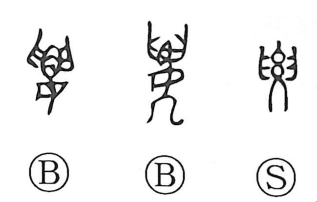

要

Kun: iru, kaname | On: you
to need ・ essential ・ main point ・ to request ・ to invite
Explanation
要 depicts the female waist and pelvic bones. The paired upper shapes belong to the pelvis, above the woman's lower figure. It is the early writing of 腰, before the flesh element was added to distinguish the bodily part.
The waist is the body's central pivot, where its structure is gathered and movement is coordinated. This gives 要 its familiar meaning of a crucial point or essential part, then the act of bringing the important points together, as in a summary.
Uses for seeking, requesting, or meeting someone belong to sound interchange with 邀. They form another branch beside the bodily pivot and its abstract extension. The Japanese verb 要る, ‘to need,’ is a familiar application of the character to what is required.